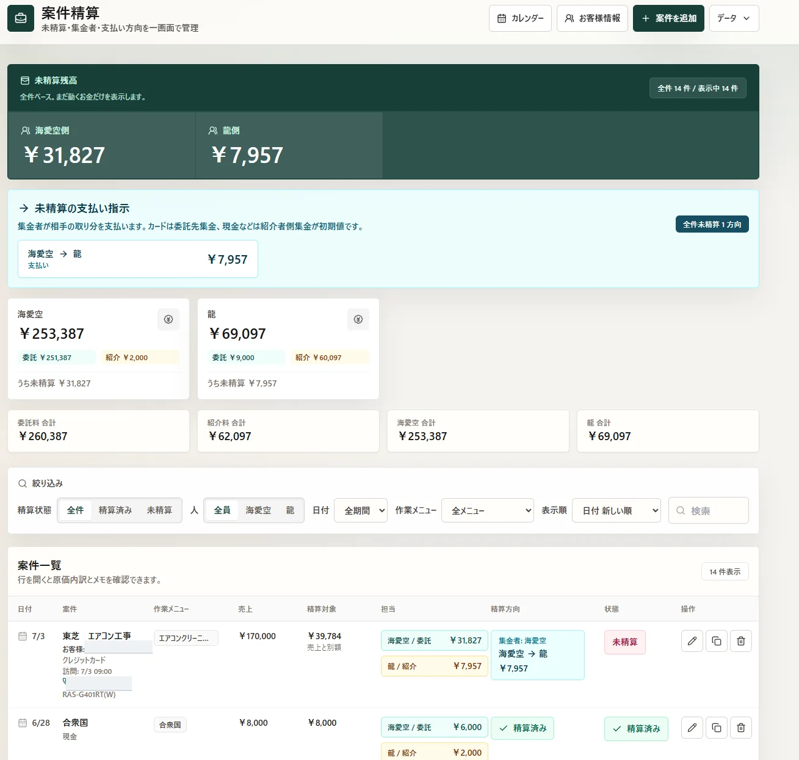

CLIENT WORK / BUSINESS APP
案件精算ウェブアプリ
未精算額・集金者・支払い方向を一画面に統合。エアコンクリーニング会社の実業務へ導入しました。
- 課題
- 精算判断に必要な情報が担当者と画面に分散
- 実装
- 要件整理、UI設計、開発、現場導入
- 成果
- 未精算額・集金・支払い方向を一画面へ統合
現場で起きていることを観察する。
判断の流れを構造へ変える。
使われ続ける形まで実装する。
1.0 / OBSERVE現場の一次情報
2.0 / STRUCTURE業務フローの設計
3.0 / SHIPWebとAIで実装
SELECTED WORKS
実案件と受託制作。見栄えより先に、誰の何を変えるのかを設計しました。
家電・エアコンの修理と工事で、ヒアリング、原因分析、見積提案、施工、日程調整までを担当してきました。 技術を入れることではなく、現場で使われ続ける状態をゴールにしています。
修理・施工・顧客対応から、実際の詰まりを見つける。
人に依存している情報と業務の流れを構造へ変える。
Web・AI・LINE・MEOを、導入後の運用まで見据えて組み立てる。
採用、業務改善、Web・AI活用のご相談を歓迎しています。